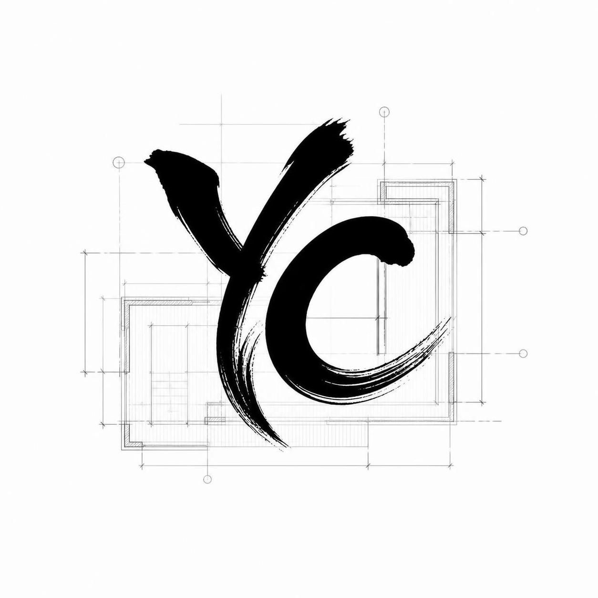
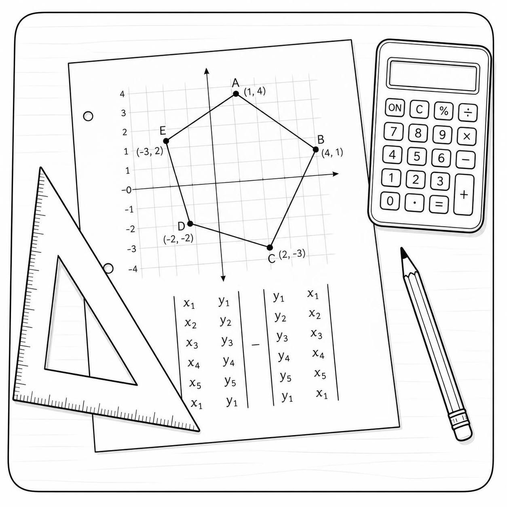

Si te gusta o necesitas herramientas para dibujar (dibujo técnico) como alternativa básica a AutoCAD has llegado al sitio indicado.

YacharCAD - dibujo en 3D
Una alternativa básica al software comercial AutoCAD, si bien actualmente está en una etapa inicial, tiene perspectivas a futuro de crecimiento interesante.

Herramienta que posibilita el cálculo de áreas, muy útil para poder trazar o dibujar líneas o contornos sobre la base de una imagen extraída ya sea de internet (como OpenStreet o GoogleMaps), o incluso imágenes extraídas de un plano (un pdf por ejemplo). Su uso es bastante amplio, de tal manera que considero que será de gran utilidad para muchos estudiantes y el público en general.
Centro de gravedad de figuras en 2D
Parte del estudio de ingenierpia implica el tema del cálculo del centro de gravedad de ciertas figuras, áreas; en el diseño sismorresistente este es un tema básico y de suprema importancia, sin más dejo este primer avance esperando a futuro complementar y mejorar este programa y añadirle más funcionalidades.